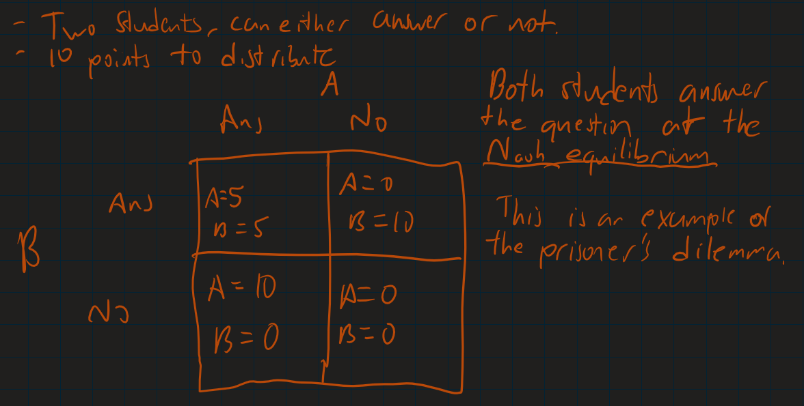
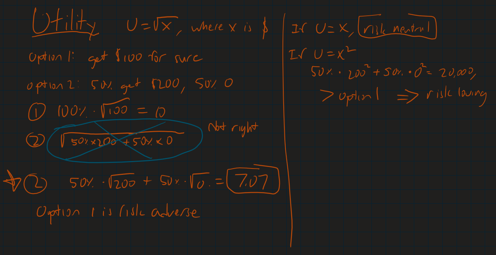
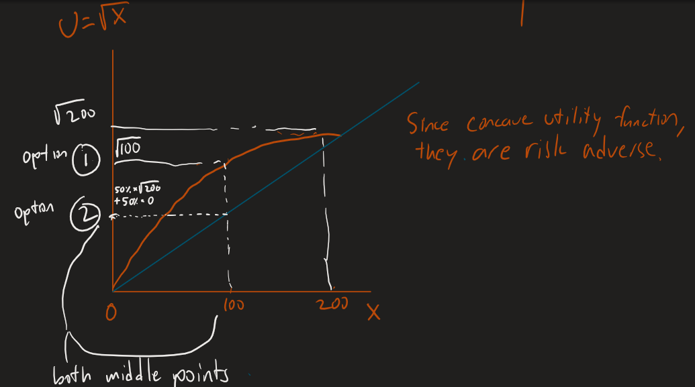
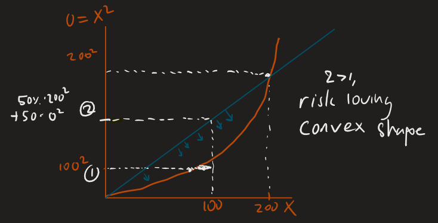
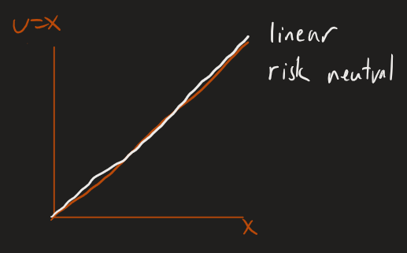

First off, please review this diagram of the prisoner's dilemma.
Insurance companies compensate the policyholders when a pre-specified adverse event occurs. They mostly make their revenue from insurance premiums, and their main cost is insurance payments.
There are three types of risk taking behaviors, risk averse, risk neutral, and risk loving (risk seeking). Would you rather have a 100% chance of getting $100 or have a 50% of getting $200?
Due to human's risk behavior, we cannot use the expected value to represent risk taking. Instead, economists use a utility function.
The only the expected utility can capture the value, not utility of the expected value!
The utility function, determines whether the person is isk averse, risk neutral, or risk loving?
Here is the graph of a risk adverse person.
Here is the graph of a risk loving person.
Guess what type of behavior this is?
Utility functions are estimated by advanced models and historical data.
Insurance companies are less ris averse than insurance buyers. They have tools to achieve lower sensitivity such as, hedging, diversification, better modeling, and superior information. More risk averse institutions shift additional risk to less risk averse institutions.
Insurance companies will always have less information about the policy buyer than the policy buyer himself.
There are types of asymmetric information problems, moral hazard, and adverse selection.
Suppose it costs you $100 (psychologically) to drive safely. This means that texting and driving is worth $100 to you.
When a customer has insurance in this case, they have a financial incentive to get in an accident. This is moral hazard. This is because the reimbursement covers the entire value of the car, so the driver is not liable at all. To fix moral hazard, have the driver pay for part of the car reimbursement by lowering the reimbursement amount.
What about the moral hazard case of a CEO who spends company money to fly to vegas for a weekend? This can be fixed by paying the CEO with stock grants and bonus which are tied to company performance. When the CEO is allowed to bear some of the losses, they have more skin in the game.
A deductible is the amount you have to pay to get reimbursed by an insurance company. This effectively reduces the reimbursement which would also fix the moral hazard problem. Insurance companies will charge you less of a premium with a high deductible because they know there is less of a moral hazard problem.